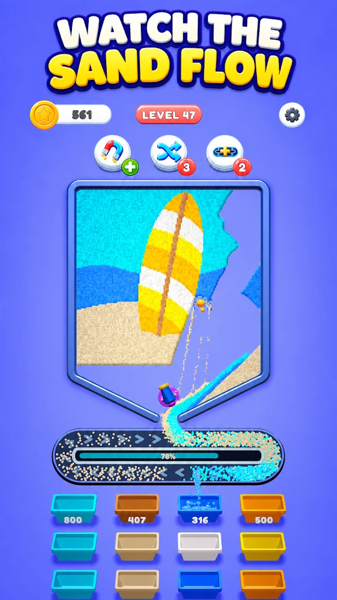

01 — SAND SHATTER SORTANDROID

COLOR-SORTING PUZZLE
Sand Shatter Sort
Break down colorful sand pictures and guide the grains into matching buckets. Color choices and conveyor capacity shape each puzzle.
My contribution
I worked across game design, level design and product management, and built a playable prototype in Unity with C#.
View on Google PlayProject contribution breakdown
- Design
- Game design and level design.
- Prototype
- Unity/C# prototyping to make the gameplay idea playable.
- Product
- Product management responsibilities alongside design work.